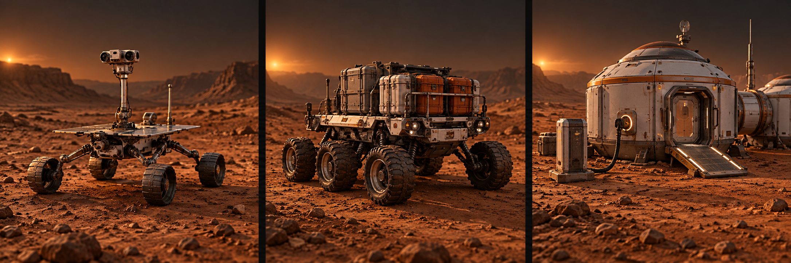
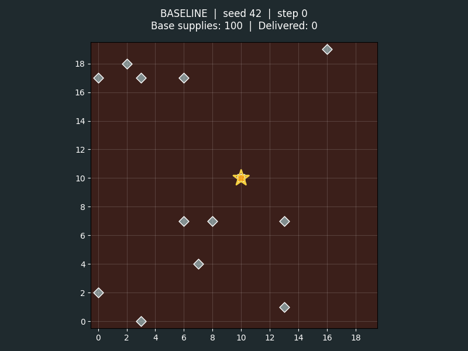

Explorer
Find and report. Detects a deposit in its current cell and adds its location to the shared known-resource set.
Starts by moving randomly. Carries no supplies.
Can it discover more while revisiting less?
Mission 01 · Field guide
Five robots. Finite supplies. Your first assignment: understand the fleet, improve one decision, and show what changes for the colony.
01 · Know your team
Explorers find supplies. Collectors bring them home. The base depends on both. These concept illustrations show their roles; the simulation represents them with simple grid markers.

Find and report. Detects a deposit in its current cell and adds its location to the shared known-resource set.
Starts by moving randomly. Carries no supplies.
Can it discover more while revisiting less?
Collect and deliver. Selects a known deposit, collects resources, and returns cargo to the base.
Starts by choosing the nearest known location. Capacity: 10 units.
Is the nearest target always the best choice?
Store and recharge. Holds the colony’s supplies and fully recharges robots when their recharge action runs at base.
Begins with 100 units. Consumes one unit each step.
Will the next delivery arrive in time?
02 · How the world works
Energy creates a second loop: travel, return to base, recharge, and set out again. Resources help the colony only after a collector unloads them at base.
20 × 20 cells; four-direction movement; no wrapping at the edges. Several agents may occupy one cell.
12 deposits × 20 units, plus 100 at base. Deposits do not regenerate.
Robots start with 100 energy. Movement costs energy; robots become inactive when it is exhausted.
Robots act in shuffled order, then the colony consumes one unit. A step is a model time unit, not a Martian day.

Explorers discover deposits in their current cell. Collectors use the shared set of discovered locations. The dashboard shows undiscovered deposits to you as an observer; that does not give a robot permission to inspect the entire hidden map.
This is shared information within one model. It is not a simulated radio network or a message-passing protocol.
The total supply is 340 units. With consumption of one per step and no replenishment, 340 is the theoretical depletion ceiling even if all supplies arrive in time. The 500-step runner limit is only a stopping safeguard.
03 · Your assignment
Watch the baseline. Identify a repeated behaviour that may waste time, movement, or energy.
Write one sentence: “If we change ___, we expect ___ because ___.”
Start with exploration, return decisions, or collection targets. Keep other decisions unchanged for your first comparison.
Repeat the same scenario, then check more seeds. Report improvements and failures.
Compare a robot’s remaining energy with its distance from base. Or remember visited cells and investigate whether avoiding repeats improves discovery. Neither idea guarantees a better score: test your prediction.
Coordinating the whole fleet is the next stage. Mission 02: Make Every Decision Count →
04 · Mission boundaries
agents.py.choose_nearest_resource().model.py, dashboard code, experiment runners and scoring logic.Use the same world settings when comparing strategies. Do not create resources, teleport robots, give them extra energy, or read undiscovered deposits from the full grid.
The current mars_colony folder has no config.py. Fixed values still appear inside the model and agent files. They remain outside the permitted strategy changes.
The planned starter cleanup will move settings into config.py and expose clearer strategy methods. Those changes have not been implemented yet. The file restriction is a workshop rule, not an automated enforcement mechanism.
05 · Evidence of success
How long did the colony remain operational? Compare the baseline and your strategy using the same seed and run limit.
How many units reached the base? Cargo still on a robot does not count as delivered. The dashboard calls this “Resources Collected”.
How much movement did the fleet use? Interpret it alongside survival and delivery: a fleet that stays still travels little but cannot sustain the colony.
Also watch remaining base supplies and active robots to understand failures. Record individual runs as well as averages so one strong result does not hide a weak scenario.
| Seed | Strategy | Survival | Delivered | Distance | Observation |
|---|---|---|---|---|---|
| 42 | Baseline | — | — | — | What went wrong? |
| 42 | Your change | — | — | — | Did the prediction hold? |
Final ranking, tie-breaks, submission instructions, and evaluation seeds will be announced before competition opens. This page defines the learning task and comparison metrics.
06 · Your toolkit
Mesa provides the simulation structure: agents, a model, a grid, activation and data collection. Your code supplies the decisions. The Solara dashboard lets you watch the fleet and inspect its state.
| File | What it does | Your role |
|---|---|---|
agents.py | Robot state, decisions and actions | Edit marked strategies only |
model.py | Creates the world and advances time | Read to understand; do not edit |
app.py | Dashboard, plots and agent table | Use to observe |
run.py | Launches dashboard or batch report | Use to run experiments |
analysis.py | Runs seed 42 and exports collected metrics | Optional inspection; writes mars_results.csv |
After following the supplied project README to install dependencies, activate the environment and run this from the parent directory containing mars_colony:
python mars_colony/run.py --port 8766Port 8766 keeps the simulation separate from this website’s local preview. Use the dashboard to inspect energy, cargo, known deposits and base supplies. Keep default world settings for comparable runs.
python mars_colony/run.py --batch --steps 500 --seed 42Save the terminal report before changing the strategy, then run the same command again. Change only the seed to investigate another starting scenario. Mission 02 supplies a five-scenario benchmark.
07 · Ready to begin
These checkboxes are a personal guide for this page visit; they are not a submission.
Preview Mission 02